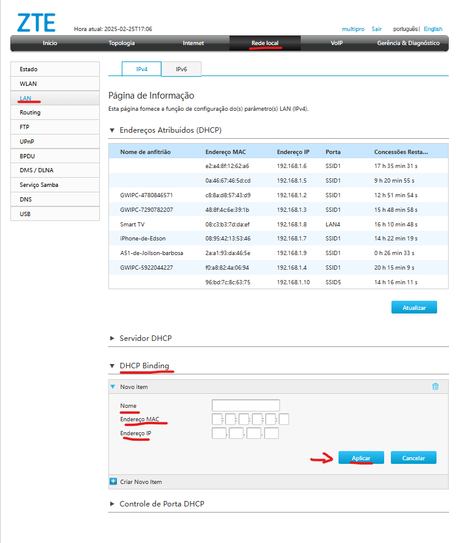
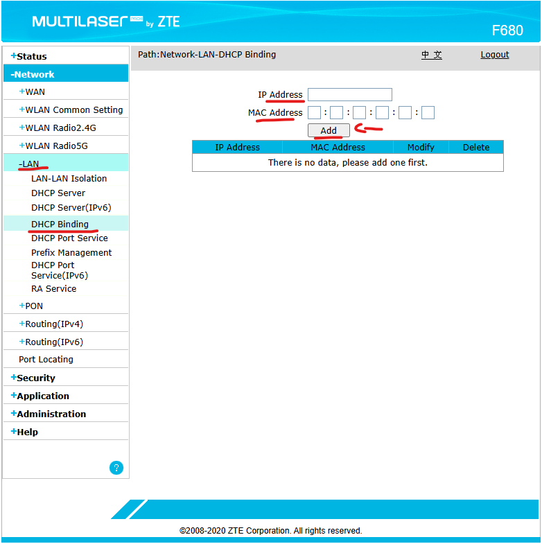

Fixar IP Local - CAT | TrixNet
Oque é um IP Local ?
Um IP local é um endereço de IP usado dentro de uma rede privada para identificar dispositivos como computadores, roteadores, impressoras e celulares. Ele não é acessível diretamente pela internet, sendo utilizado apenas para comunicação interna dentro da rede.
Passo a passo de como fixar IP local F6600 (Interface cinza)
Para acessar a interface para fixar um IP na ONU cinza, segue abaixo:
1. Entre em Rede local>LAN>IPv4>DHCP Binding
2. Só estar setando um Nome de identificação
3. Adicionar o MAC Address do equipamento.
4. E o IP que quer fixar e clique em Aplicar.
Passo a passo de como fixar IP local F680 (Interface azul)
Para acessar a interface para fixar um IP na ONU azul, segue abaixo:
1. Entre em LAN>DHCP Binding
2. Coloque o IP que desejar fixar.
3. Adicionar o MAC Address do equipamento e clique em Add.
⚠️ Importante
Sempre que for fixar um IP, valide na topologia se este IP já não está sendo usado para não causar um conflito de IP na rede.